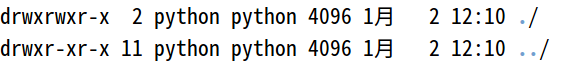
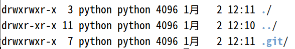
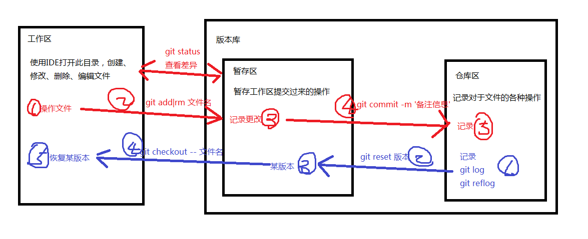

本地仓库
创建本地仓库
- 创建空目录
mkdir test7
cd test7
- 目录结构图如下：

- 在目录下创建本地仓库
git init
- 创建成功后，目录结构如下图：

- 版本库就是一个目录，这个目录里面的所有文件都可以被Git管理起来，每个文件的修改、删除，Git都能跟踪，以便任何时刻都可以追踪历史，或者在将来某个时刻可以“还原”
文件管理
- 本地仓库分为三部分：工作区，暂存区，仓库区，其中暂存区、仓库区是版本库部分
- 三个部分的操作及命令如下图

工作区与暂存区
- 使用IDE打开目录，创建项目，将文件添加到暂存区
git add 文件1 文件2 ...
git add 目录
- 使用暂时区的内容恢复工作区的内容
git checkout -- 文件名
- 查看暂存区的状态
git status
暂存区与仓库区
- 将暂存区的记录添加到仓库区
git commit -m '本次提交的说明信息'
- 查看仓库区的历史
当前版本的历史版本：git log
简版显示：git log --pretty=oneline
历史命令：git reflog
在Git中，用HEAD表示当前版本，也就是最新的提交3628164...882e1e0（注意我的提交ID和你的肯定不一样），上一个版本就是HEAD^，上上一个版本就是HEAD^^，当然往上100个版本写100个^比较容易数不过来，所以写成HEAD~100
对比工作区和仓库区中某版本某文件的不同
git diff HEAD -- 文件名
- 回退历史版本到暂存区
git reset HEAD^或版本号
删除文件
- 依次执行如下命令
rm 文件名
git rm 文件名
git commit -m '说明信息'